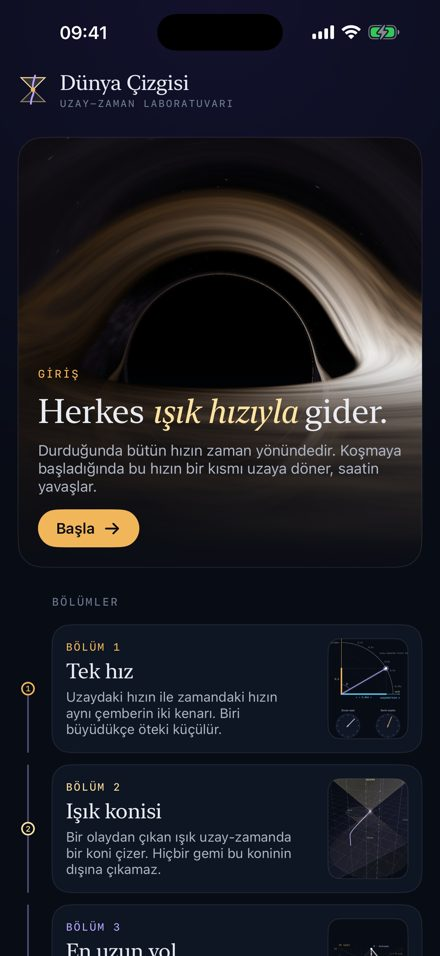

SPACETIME LABORATORY
A free iPhone app that explains relativity through live scenes you can touch. Everyone moves at the speed of light: stand still and all your speed points along time; run, and part of it turns into space.
Questions, bug reports or ideas: fatihgocgun@icloud.com · Privacy policy — the app collects no data.
UZAY-ZAMAN LABORATUVARI
Görelilik kuramını canlı, dokunulabilir sahnelerle anlatan ücretsiz iPhone uygulaması. Herkes ışık hızıyla gider: durduğunda bütün hızın zamandadır, koştukça bir kısmı uzaya döner.

Soru, hata bildirimi ya da öneri için: fatihgocgun@icloud.com
Gizlilik politikası — uygulama hiçbir veri toplamaz.